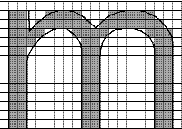
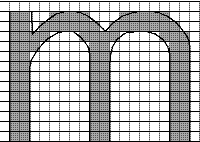
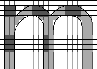

The labels in square brackets are the ones used in the bibtex version of my publication list.
[AAGHSS] U. Akyol, M. Andrews, P. Gupta, J. Hobby, I. Saniee and A. Stolyar. Joint Scheduling and Congestion Control in Mobile Ad-Hoc Networks in INFOCOM 2008.
In this paper we study the problem of jointly performing scheduling and congestion control in mobile ad-hoc networks so that network queues remain bounded and the resulting flow rates satisfy an associated network utility maximization problem. In recent years a number of papers have presented theoretical solutions to this problem that are based on combining differential-backlog scheduling algorithms with utility-based congestion control. However, this work typically does not address a number of issues such as how signaling should be performed and how the new algorithms interact with other wireless protocols. In this paper we address such issues. In particular:
[ClHo07a] Kenneth L. Clarkson and John D. Hobby. Ocelot's Knapsack Calculations for Modeling Power Amplifier and Walsh Code Limits IEEE Vehicular Technology. Conference, 2007.
We give a model for the performance impact on wireless systems of the limitations of certain resources, namely, the base-station power amplifier and the available OVSF codes. These limitations are readily modeled in the loss model formulation as a stochastic knapsack. A simple and well-known recurrence of Kaufman and Roberts allows the predictions of the model to be efficiently calculated. We discuss the assumptions and approximations we have made that allow the use of the model. We have included the model in Ocelot, a Alcatel-Lucent tool for modeling and optimizing cellular phone systems. The model is fast to compute, differentiable with respect to the relevant parameters, and able to model broad ranges of capacity and resource use. These conditions are critical to our application of optimization.
This paper won the VTC best paper award.
[ClHaHo07] Kenneth L. Clarkson, K. Georg Hampel and John D. Hobby. Modeling UpLink Power Control with Outage Probabilities IEEE Vehicular Technology. Conference, 2007.
We investigate models for uplink interference in wireless systems. Our models account for the effects of outage probabilities. Such an accounting requires a nonlinear, even nonconvex model, since increasing interference at the receiving base station increases both mobile transmit power \emph{and} outage probability, and this results in a complex interaction. Our system model always has at least one solution, a fixed point, and it is provably unique under certain reasonable conditions. Our main purpose is to model real wireless systems as accurately as possible, and so we test our models on realistic scenarios using data from a sophisticated simulator. Our algorithm for finding a fixed point works very well on such scenarios, and is guaranteed to find the fixed point when we can prove it is unique. A slightly simplified model reduces the main data structure for a K-sector market to 16K2 bytes of memory.
[Ho04] J. D. Hobby. An Application for Semi-Automatic Differentiation in AD2004.
A large software project involving the optimization of cellular phone systems required evaluating a complicated function and its derivatives. Due to stringent limitations on run-time and memory consumption, all the derivatives were hand-coded.
We discuss the time and memory costs for the hand-coded derivatives and compare them with the costs of automatic differentiation. We also consider the software development costs for hand-coded derivatives and suggest some approaches for adding as much automation as possible subject to the constraint that overall run time and memory consumption is similar to that of the hand-coded derivatives. We also consider methods for partial automation while preserving the efficiency of hand-coded derivatives, and we discuss some preliminary efforts in this direction. There need to be more tools for partial automation so that applications such as this one can get at least some of the benefits of automatic differentiation.
[ClHo04b] Kenneth L. Clarkson and John D. Hobby. A Model of Soft Handoff under Dynamic Shadow Fading IEEE Vehicular Technology. Conference, 2004.
We introduce a simple model of the effect of temporal variation in signal strength on active-set membership, for cellular phone systems that use the soft-handoff algorithm of IS-95a. This model is based on a steady-state calculation, and its applicability is confirmed by Monte Carlo studies.
[ClHo04a] Kenneth L. Clarkson and John D. Hobby. A Model of Coverage Probability under Shadow Fading Submitted for publication.
We give a simple analytic model of coverage probability for CDMA cellular phone systems under lognormally distributed shadow fading. Prior analyses have generally considered the coverage probability of a single antenna; here we consider the probability of coverage by an ensemble of antennas, using some independence assumptions, but also modeling a limited form of dependency among the antenna fades. We use the Fenton-Wilkinson approach of approximating the external interference $I_0$ as lognormally distributed. We show that our model gives a coverage probability that is generally within a few percent of Monte Carlo estimates, over a wide regime of antenna strengths and other relevant parameters.
[HCHP03] G. Hampel, K. L. Clarkson, J. D. Hobby, and P. A. Polakos. Tradeoff between Coverage and Capacity in Dynamic Optimization of 3G Cellular Networks IEEE Vehicular Technology. Conference, 2003.
For 3G cellular networks, capacity is an important objective, along with coverage, when characterizing the performance of high-data-rate services. In live networks, the effective network capacity heavily depends on the degree that the traffic load is balanced over all cells, so changing traffic patterns demand dynamic network reconfiguration to maintain good performance. Using a four-cell sample network, and antenna tilt, cell power level and pilot fraction as adjustment variables, we study the competitive character of network coverage and capacity in such a network optimization process, and how it compares to the CDMA-intrinsic coverage-capacity tradeoff driven by interference. We find that each set of variables provides its distinct coverage-capacity tradeoff behavior with widely varying and application-dependent performance gains. The study shows that the impact of dynamic load balancing highly depends on the choice of the tuning variable as well as the particular tradeoff range of operation.
The decomposition of a page image into text and various types of non-text elements is a challenging problem important to document analysis problems such as OCR, storage and retrieval, and identifying the sender and recipient of a FAX. A fast classifier based on a skeletonization of the image attempts to classify groups of related line segments as text, ruling lines, signatures, other line art, or miscellaneous. Then everything classified as text is processed by Baird's language-free layout analysis system so that a post-processor can use the geometric layout to refine the decisions about what is text and what is non-text. This could then be further processed to identify complex objects such as tables, signature blocks, and line drawings.
In order to recognize signatures and separate them from ruling lines and components of line drawings, line segments from skeletonization need to be strung together by a curve-fitting process. After finding long, fairly-straight lines and setting them aside, a more lenient criterion is used for stringing together pairs of segments to form the groups on which to run the fast classifier.
[Hobby97g] John D. Hobby, Matching Document Images with Ground Truth, International Journal on Document Analysis and Recognition.
Since optical character recognition systems often require very large amounts of training data for optimum performance, it is important to automate the process of finding ground truth character identities for document images. This is done by finding a transformation that matches a scanned image to the machine-readable document description that was used to print the original. Rather than depend on finding feature points, a more robust procedure is to follow up by using an optimization algorithm to refine the transformation. The function to optimize can be based on the character bounding boxes---it is not necessary to have access to the actual character shapes used when printing the original.
[Hobby97a] John D. Hobby and T. K. Ho, Enhancing Degraded Document Images via Bitmap Clustering and Averaging, ICDAR'97: Fourth International Conference on Document Analysis and Recogntion.
Proper display and accurate recognition of document images are often hampered by degradations caused by poor scanning or transmission conditions. We propose a method to enhance such degraded document images for better display quality and recognition accuracy. The essence of the method is in finding and averaging bitmaps of the same symbol that are scattered across a text page. Outline descriptions of the symbols are then obtained that can be rendered at arbitrary resolution. The paper describes details of the algorithm and an experiment to demonstrate its capabilities using fax images.
[OGorHob96] Lawrence O'Gorman and John D. Hobby, Adaptive and Outline-Based Subsampling of Images Containing Text and Binary Graphics, to appear.
For digital display of scanned documents containing text and other binary graphics including line drawings, there is often the need to reduce the image size so that it can be more completely viewed on a computer monitor. We present an approach entailing two complementary methods: adaptive subsampling and outline based subsampling.
The adaptively subsampling method reduces image size by preferentially removing ``low-information'' or ``silent'' rows and columns. These low-information regions can be located in margins, between text lines, and even through lines of graphics and text. The outline-based subsampling method entails boundary determination, polygonal fitting, smoothing of this result, and finally reduction in size of these polygonal boundaries (rather than pixels as in the conventional approach). Together, or separately, these methods yield a higher quality, subsampled image. Results of the approach are shown. The limits in terms of image reduction versus readability are discussed.
[HoBa96] John D. Hobby and Henry S. Baird, Degraded Character Image Restoration, Proceedings of the Fifth Annual Symposium on Document Analysis and Image Retrieval, 1996.
The design and analysis of an algorithm for the restoration of degraded images of machine-printed characters is presented. The input is a set of degraded bilevel images of a single unknown character; the output is an approximation to the character's ideal artwork. The algorithm seeks to minimize the discrepancy between the approximation and the ideal, measured as the worst-case Euclidean distance between their boundaries. We investigate a family of algorithms which superimpose the input images, add up the intensities at each point, and threshold the result. We show that, under degradations due to random spatial sampling error, significant asymptotic improvements can be achieved by suitably preprocessing each input image and postprocessing the final result. Experimental trials on special test shapes and Latin characters are discussed.
[Hobby95] John D. Hobby, Space-Efficient Outlines from Image Data via Vertex Minimization and Grid Constraints, an abridged version appeared in Graphical Models and Image Processing, 52(2), 1997.
When processing shape information derived from a noisy source such as a digital scanner, it is often useful to construct polygonal or curved outlines that match the input to within a specified tolerance and maximize some intuitive notion of smoothness and simplicity. The outline description should also be concise enough to be competitive with binary image compression schemes. Otherwise, there will be a strong temptation to lose the advantages of the outline representation by converting back to binary image format.
This paper proposes a two-stage pipeline that provides separate control over the twin goals of smoothness and conciseness: the first stage produces a specification for a set of closed curves that minimize the number of inflections subject to a specified error bound; the second stage produces polygonal outlines that obey the specifications, have vertices on a given grid, and have nearly the minimum possible number of vertices. Both algorithms are reasonably fast in practice, and can be implemented largely with low-precision integer arithmetic.
An older version of this paper was more detailed, but harder to read.
[Hobby94] John D. Hobby, A Natural Lattice Basis Problem with Applications, Mathematics of Computation, 67(223), 1998.
Integer lattices have numerous important applications, but some of them may have been overlooked because of the common assumption that a lattice basis is part of the problem instance. This paper gives an application that requires finding a basis for a lattice defined in terms of linear constraints. We show how to find such a basis efficiently.
[Hobby93c] John D. Hobby, Practical Segment Intersection with Finite Precision Output, Computation Geometry Theory and Applications, 13(4), 1999.
The fundamental problem of finding all intersections among a set of line segments in the plane has numerous important applications. Reliable implementations need to cope with degenerate input and limited precision. Representing intersection points with fixed precision can introduce extraneous intersections. This paper presents simple solutions to these problems and shows that they impose only a very modest performance penalty. Test data came from a data compression problem involving a map database.
[Grosse94] Eric Grosse and John D. Hobby, Improved Rounding for Spline Coefficients and Knots, Mathematics of Computation, 63(207), 1994.
When representing the coefficients and knots of a spline using only small integers, indepently rounding each infinite-precision value is not the best strategy. We show how to build an affine model for the error expanded about the optimal full-precision free-knot or parameterized spline, then use the Lovász basis reduction algorithm to select a better rounding. The techinique could be used for other situations in which a quadratic error model can be computed.
[Hobby93a] John D. Hobby, Polygonal Approximations that Minimize the Number of Inflections, Proceedings of the Fourth Annual ACM}-SIAM Symposium on Discrete Algorithms, 1993.
Consider the problem of processing shape information derived from a noisy source such as a digital scanner. The object is to construct a polygon or a closed curve that matches the input polygon to within a fixed error tolerance and maximizes some intuitive notion of "smoothness and simplicity". Part of this goal should be to minimize the number of inflections.
The algorithm presented here finds an inflection-minimizing polygonal approximation and produces a data structure that characterizes a set of closed curves that fall within the error tolerance and minimize the number of inflections. The algorithm runs in linear time, is reasonably fast in practice, and can be implemented in low-precision integer arithmetic.
[Hobby93] John D. Hobby, Generating Automatically Tuned Bitmaps from Outlines, JACM 40(1), 1993.

Consider the problem of generating bitmaps from character shapes given as outlines. The obvious scan-conversion process does not produce acceptable results unless important features such as stem widths are carefully controlled during the scan-conversion process. This paper describes a method for automatically extracting the necessary feature information and generating high quality bitmaps without resorting to hand editing. Almost all of the work is done in a preprocessing step, the result of which is an intermediate form that can be quickly converted into bitmaps once the font size and device resolution are known.
A heuristically defined system of linear equations describes how the ideal outlines should be distorted in order to produce the best possible results when scan converted in a straight-forward manner. The Lovász basis reduction algorithm then reduces the system of equations to a form that makes it easy to find an approximate solution subject to the constraint that some variables must be integers.
The heuristic information is of such a general nature that it applies equally well to Roman fonts and Japanese Kanji.
[Hobby91] John D. Hobby, Numerically Stable Implicitization of Cubic Curves, ACM Transactions on Graphics, 10(3), 1991.
We give efficient, numerically-stable techniques for converting polynomial and rational cubic curves to implicit form. We achieve numerical stability by working in a rotated coordinate system and using carefully chosen expressions for the coefficients that appear in the implicit form. This is more practical than previously known methods which can be numerically unstable unless all computations are done in exact rational arithmetic.
[Hobby90] John D. Hobby, Rasterization of Nonparametric Curves, ACM Transactions on Graphics, 9(3), 1990.
We examine a class of algorithms for rasterizing algebraic curves based on an implicit form that can be evaluated cheaply in integer arithmetic using finite differences. These algorithms run fast and produce ``optimal'' digital output, where previously known algorithms have had serious limitations. We extend previous work on conic sections to the cubic and higher order curves, and we solve an important undersampling problem.
[Hobby89] John D. Hobby, Rasterizing Curves of Constant Width, JACM 36(2), 1989.
This paper gives a fast, linear-time algorithm for generating high-quality pixel representations of curved lines. The results are similar to what is achieved by selecting a circle whose diameter is the desired line width, and turning on all pixels covered by the circle as it moves along the desired curve. However, we replace the circle by a carefully chosen polygon whose deviations from the circle represent subpixel corrections designed to improve the aesthetic qualities of the rasterized curve. For nonsquare pixels, equally good results are obtained when an ellipse is used in place of the circle. We introduce the class of polygons involved, give an algorithm for generating them, and show how to construct the set of pixels covered when such a polygon moves along a curve. The results are analyzed in terms of a mathematical model for the uniformity and accuracy of line width in the rasterized image.
[Hobby88] John D. Hobby, Smoothing Digitized Contours, in Theoretical Foundations of Computer Graphics and CAD, Springer Verlag, 1988.
We examine a class of algorithms for digitizing spline curves by deriving an implicit form that can be evaluated cheaply in integer arithmetic using finite differences. These algorithms run fast and produce "optimal" digital output, where previously known algorithms have had serious limitations. We extend previous work on conic sections to the cubic and higher order curves, solve an important undersampling problem, and give efficient, numerically stable techniques for converting from commonly used parametric forms to suitable implicit forms.
[Hobby86] John D. Hobby, Smooth, Easy to Compute Interpolating Splines, Discrete and Computational Geometery 1(2), 1986.
We present a system of interpolating splines with first and approximate second order geometeric continuity. The curves are easily computed in linear time by solving a system of linear equations without the need to resort to any kind of successive approximation scheme. Emphasis is placed on the need to find aesthetically pleasing curves in a wide range of circumstances; favorable results are obtained even when the knots are very unequally spaced or widely separated. The curves are invariant under scaling, rotation, and reflection, and the effects of a local change fall off exponentially as one moves away from the disturbed knot
Approximate second order continuity is achieved by using a linear "mock curvature" function in place of the actual endpoint curvature for each spline segment and choosing tangent directions at knots so as to equalize these. This avoids extraneous solutions and other forms of undesirable behavior without seriously compromising the quality of the results.
The actual spline segments can come from any family of curves whose endpoint curvatures can be suitably approximated, but we propose a specific family of parametric cubics. There is freedom to allow tangent directions and "tension" parameterts to be specified at knots, and special "curl" paramters may be given for additional control near the endpoints of open curves.
[Hobby85] John D. Hobby, Digitized Brush Trajectories, Ph.D. thesis, Stanford University, 1985. (Also Stanford CS-TR-85-1070)
We consider the problem of finding a discrete set of pixels that approximates the envelope of a convex brush shape with respect to a given trajectory. Let the digitization of a planar region be the set of pixels whose centers lie inside of it. We develop mathematical models for the width of digitized brush strokes, and we give a class of polygonal brush shapes such that the width of their envelope with respect to a given trajectory is accurately reflected by the digitization of the envelope. Polygonal brush shapes also have the advantage that it is usually much easier to compute the digitization of the envelope with respect to a given trajectory.
We present fast algorithms for approximating a given brush shape with an appropriate polygon so that the digitization of the envelope of the modified brush will have more accurate and uniform width than the digitization of the exact envelope would. We also present an algorithm for finding a set of pixels that represents the envelope of a dynamically changing brush while preserving accurate and uniform stroke width. This algorithm finds a polygonal path with simple rational slopes that is digitally equivalent to the given trajectory. Other possible applications of this polygonal representation include smoothing digitized curves, data compression, and curve fitting.
[Hobby84] John D. Hobby and G. Gu, A Chinese Meta-Font, Tugboat, the TeX User's Group Newsletter, 5(2), (also Stanford Report STAN-CS-83-974), 1984.
Donald E. Knuth's METAFONT system allows an entire family of fonts or "meta-fonts" to be specified preciesely and mathematically so that it can be produced in different sizes and styles for different raster devices. We present a new techinique for defining Chinese characters hierarchically with METAFONT, and we use this to create about 128 characters loosely based on exisiting designs. The method could esasily be extended to new characters. We define METAFONT subroutines for commonly used portions of strokes and then combine some of these into routines for drawing complete strokes, radicals, and characters. We can handle all of the basic strokes with only 14 different routines that are parameterized to transform themselves properly according to the stroke skeletons. Radical drawing routines ara parameterized by their bounding box and they position their strokes reletaive to this. Special routines posisiton certain control points to ensure that the strokes will join properly in all different styles.
The routines are flexible enough to create high quality Song Style and Long Song characters by adjusting font paramters. Furthermore, Bold Style characters can be produced from the same radicals merely be substituting new stroke routines. There is also room for further experimentation as well as smaller adjustments between these extremes.
The original METAFONT79 files are available for downloading, but they are of limited use because they are not compatible with today's METAFONT: hobbygu.tar.gz
[Hobby83a] John D. Hobby and Donald E. Knuth, A Programming and Problem Solving Seminar, Stanford tech report STAN-CS-83-990, 1983.
This report contains edited transcripts of the discussions held in Stanford's course CS204, Problem Seminar, during autumn quarter 1982. Since the topics span a large range of ideas in computer science, and since most of the important research paradigms and programming paradigms were touched on during the discussions, these notes may be of interest to graduate studients in computer science at other universities and to professional people in the "real world".
The preseent report is the fifth in a series of such transcripts, continuing the tradition established in STAN-CS-77-606 (Michael J. Clancy, 1977), STAN-CS-79-707 (Chris Van Wyk, 1979), STAN-CS-81-863 (Allan A. Miller, 1981), STAN-CS-83-989 (Joseph S. Weening, 1983).
[Hobby82] John D. Hobby and G. Gu, Using String Matching to Compress Chinese Characters, Proceedings of the 1982 International Conference of the Chinese-Language Computer Society, (also Stanford Report STAN-CS-82-914) 1982.
A new method for font compression is introduced and compared to exisiting methods. A very compact representation is achieved by using a variant of McCreight's string matching algorithm to compress the bounding contour. Results from an actual implementation are given showing the improvement over other methods and how this varies with resolution and character complexity. Compression ratios of up to 150 are achived for Chinese characters.